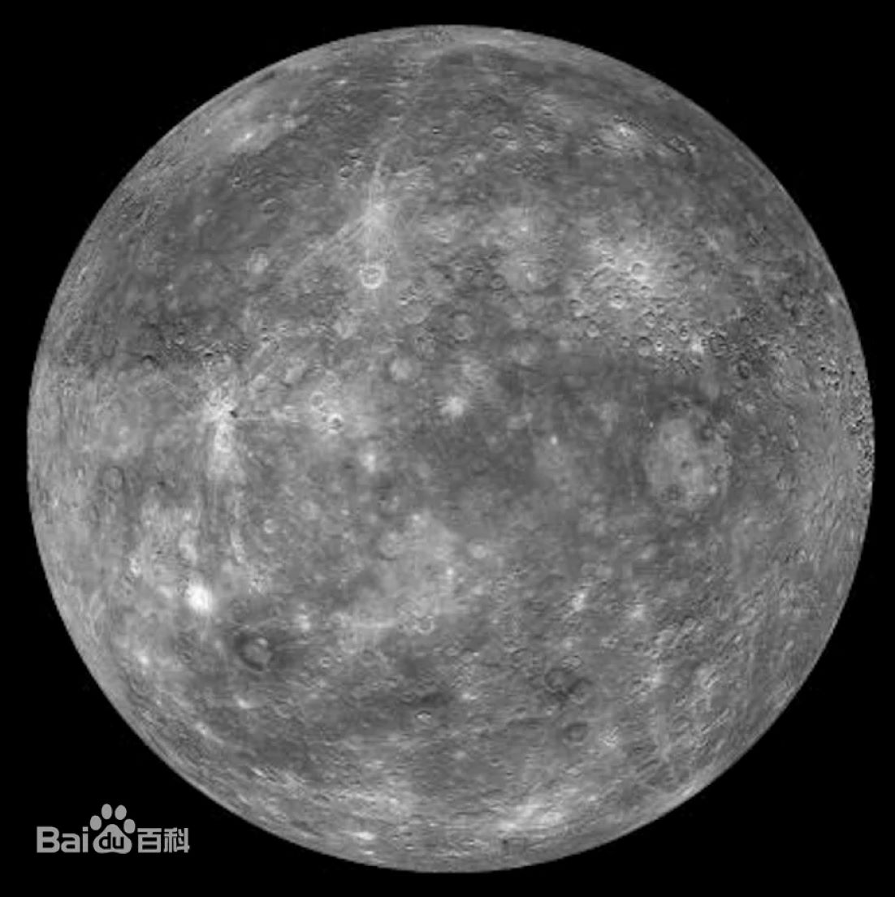

|  | 水星（英语：Mercury；拉丁语：Mercurius），因快速运动，欧洲古代称它为墨丘利（Mercury），意为古罗马神话中飞速奔跑的信使神。中国古称辰星，西汉《史记‧天官书》的作者司马迁从实际观测发现辰星呈灰色，与五行学说联系在一起，以黑色属水，将其命名为水星。 水星是太阳系的八大行星中最小且最靠近太阳的行星。轨道周期是87.9691天，116天左右与地球会合一次，公转速度远远超过太阳系的其它行星。水星是表面昼夜温差最大的行星，大气层极为稀薄无法有效保存热量，白天时赤道地区温度可达437°C，夜间可降至-172°C。水星的轴倾斜是太阳系所有行星中最小的（大约1⁄30度），但有最大的轨道偏心率。水星在远日点的距离大约是在近日点的1.5倍。水星表面遍布环形山，与月球和其他卫星相似，其地质在数十亿年来都处于非活动状态。 水星无四季变化，行星中仅有它与太阳轨道共振。每自转三圈的时间与绕太阳公转两圈的时间几乎相等。从太阳看水星，参照它的自转与公转，每两个水星年才一个太阳日。 水星的轨道位于地球的内侧（与金星相同），所以它只能在晨昏之际与白天出现于天空中，而不会在子夜前后出现。从地球看水星的亮度有很大的变化，视星等从-2.48至7.25等，但是它与太阳的距角最大只有28.3°。在北半球，只能在凌晨或黄昏的曙暮光中看见水星。当大距出现于赤道以南的纬度时，在南半球的中纬度可以在完全黑暗的天空中看见水星。 |
返回 |